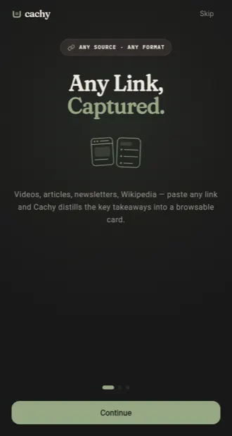
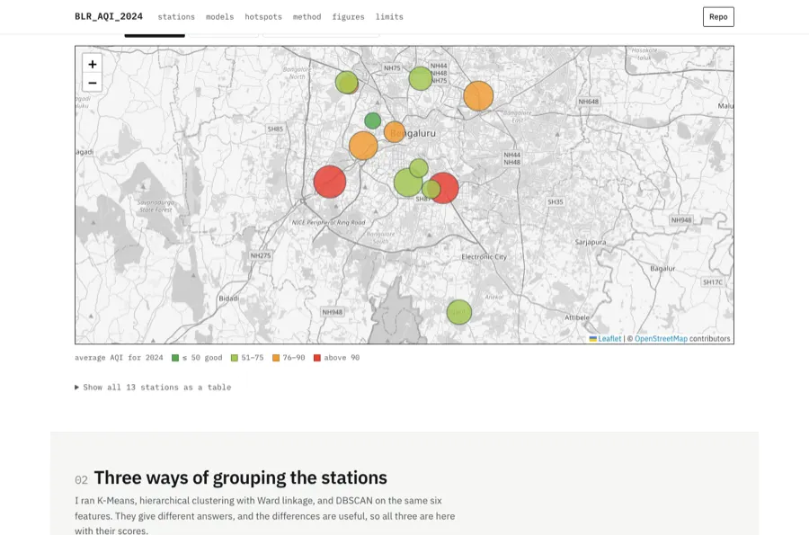
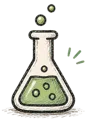
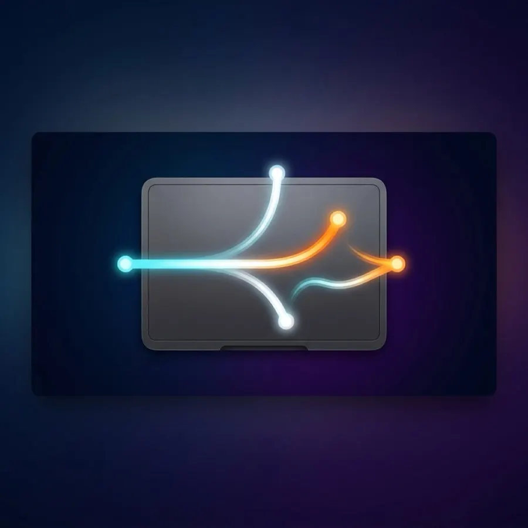
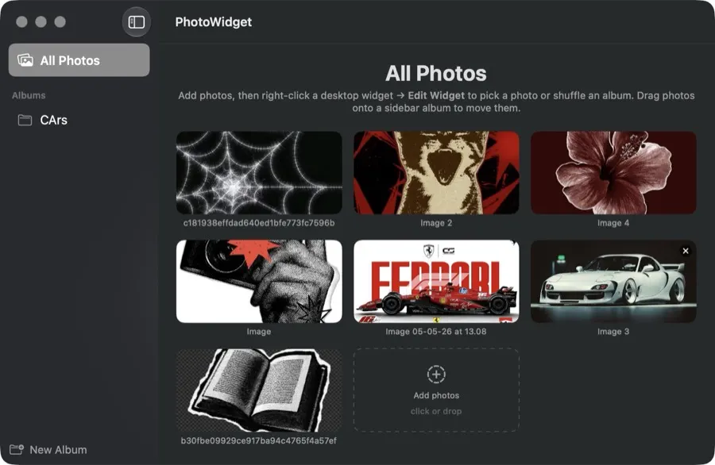
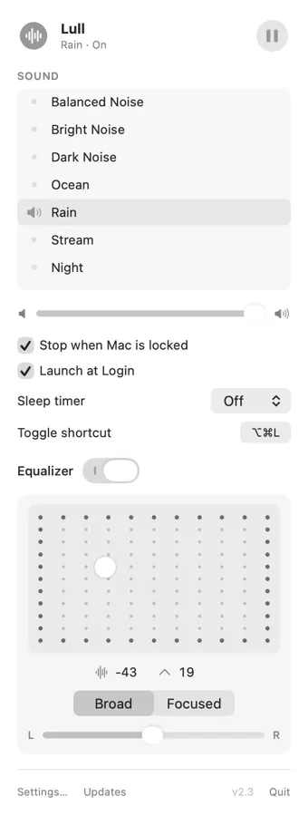
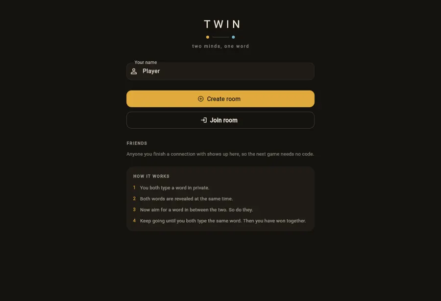
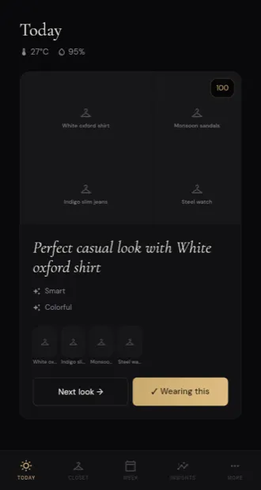
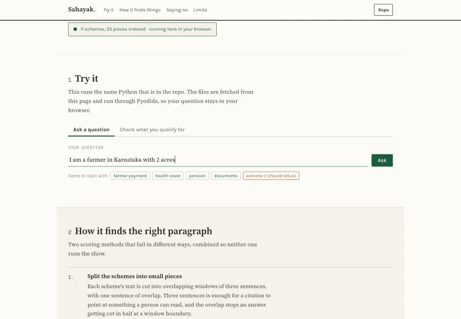

Each card shows the pipeline it ran through. All code on GitHub.

the running web app
Cachy
knowledge engine · flutter + fastapi
Turns Reels, Shorts and articles into structured knowledge cards: transcription, OCR, an LLM chain with
automatic fallback across Gemini / Cerebras / Groq, all linked in a semantic knowledge graph.
Ask the Indian Constitution anything, get grounded answers with exact citations and similarity scores.
Retrieval written from scratch in ~60 lines. A 20-query stress test is
documented in the repo, 78% accuracy after fixing chunking.
pdfchunkembedretrievecite
78% on 20-query eval~60 linesno
framework
sentence-transformers · ChromaDB · Mistral-7B
flip →

red circles are the hotspots
Bangalore Air Quality
data mining · unsupervised
A year of data from 13 CPCB stations, 6 engineered features, three clustering algorithms compared. DBSCAN
worked best since it flags outliers, and the outliers were the hotspots. Silk Board hit AQI
500.
5 minhow often the monitor recomputes population stability index on a
live XGBoost service
IPL Match Predictor · MLOps
full ml lifecycle · self-monitoring
XGBoost match-outcome model served over FastAPI, with a monitor computing Population Stability Index every
5 minutes to catch data drift, and a live Streamlit health dashboard. Three services, Docker Compose.
datafeaturestrainservemonitor
PSI every 5 min3 serviceslive drift
dashboard
XGBoost · FastAPI · Streamlit · Docker
6gestures, orientation-invariant, with dwell-time guards against
accidental triggers
AirSwipe
computer vision · gesture control
Control PowerPoint with bare hands through a webcam: swipe to navigate, point for a live laser dot, pinch
to zoom. Orientation-invariant detection with dwell-time guards against accidental triggers.
webcamlandmarksgestureaction
orientation-invariantdwell-time guards6
gestures
MediaPipe · OpenCV · PyQt6
macOS app
15classes across 5 crops, every prediction paired with a Grad-CAM
heatmap
Plant Disease Detector
cnn · grad-cam explainability
Upload a leaf photo, get a diagnosis, and a Grad-CAM heatmap showing exactly which
part of the leaf the model looked at. Because a prediction plus a confidence score tells you nothing about
whether it read the lesion or the background.
100%on-device. no network call, no account, Catmull-Rom smoothing for
hand tremor
ScribbleType
on-device ml · accessibility
Handwriting-to-text Android keyboard for seniors: on-device ink recognition, a personal dictionary that
learns your writing, and Catmull-Rom smoothing to filter hand tremor.
strokessmoothrecognizelearn
100% on-devicetremor smoothingreal Kotlin
IME
ML Kit · Flutter · Kotlin IME
android apk
CLIPtext and image queries against one index, on a domain it was never
fine-tuned for
Indian Food Multimodal Search
clip · text + image retrieval
Find any Indian dish by describing it in plain English, or by uploading a photo of something similar. Built
to test whether CLIP holds up on something domain-specific instead of the usual stock-photo demos. It does.
encodeindexqueryrankexplain
text + image queriesdomain CLIP testinterpretable
ranks
CLIP · Gradio · HF Spaces
// research · both PDFs are on this page
Papers under review
Written as an MTech student, trained on free GPUs. You can read both of them
here — the numbers below are the ones in the PDFs.
under review
Efficient LLM Preference Classification
Through Position Bias Mitigation and Architectural Symmetry
Vatsal Vaghasiya, Nancy Kshetrimayum, B. Prabadevi, Boppuru Rudra Prathap
first author
as reported in the paper
validation log loss
0.9871
6.2% better than the baselines
parameters
71M
127× fewer — the winning solutions ran 9B+ on 8×A100
three-class accuracy
52.06%
up 3.5 percentage points
training
8.4 h
two free Kaggle T4s, 57,477 human preferences
what I learned: swap augmentation bought more accuracy
than a bigger model would have. It killed the position bias directly.
My part: conceptualization, methodology, software, validation, review and editing.
Code and weights stay unpublished until the review decision.

// competition · 2026
Competitions & awards
🥇
Akshara Foundation · Datathon 2026
1st Place — Karnataka Education Datathon
Analysed arithmetic learning outcomes across 1.38 million Karnataka government
school students. Built indices, OLS residuals, and a 7-screen Streamlit dashboard to argue the gap is
skill-shaped, not geography-shaped.
one figure from the submission: infrastructure explains less of the gap than people
assume (r = 0.356), which is the whole argument
// the app shelf
Apps I've shipped each began as an itch on my own machine
Five native macOS apps in Swift, plus mobile. Most of these started as simple interfaces
for my ML projects.
Glide.appmacOS

Custom 3/4/5-finger trackpad gestures for macOS.
Speed-aware: slow swipe switches windows, fast flick opens the browser
Window snapping, media control, app launching
Reciprocal undo, haptic feedback, per-app filters
Swift · AppKit · IOKit multitouch
.dmg download
PhotoWidget.appmacOS

Your own photos as desktop widgets.
Four sizes, per-widget photo choice
Full color even in monochrome widget mode
Swift · WidgetKit · AppIntents
.dmg download
Lull.appmacOS

Menu-bar control for the Background Sounds feature Apple buried in Accessibility.
Drives the same private framework System Settings uses, so macOS still owns the audio
Two-way sync with Settings; equalizer, sleep timer, stop-on-lock
Every private-API call is guarded, so a macOS change costs one feature and not the app
Swift · AppKit · HearingUtilities (private)
.dmg download
TWINWeb · Android

Two players name words aimed at the middle of the last pair, until they match.
Firestore is the whole backend — no server, no socket layer
In-flight words live in a subcollection so neither player can read the other's first
Rounds resolve client-side via a guarded transaction: one write lands, the other backs out
Flutter · Firestore · Firebase Hosting
play it liveandroid apk
Smart WardrobeFlutter

Photograph your clothes once; the app plans what you wear.
Outfit suggestions by occasion, from clothes you actually own
"Today" screen checks live weather + recent wear history first
Wash tracking and packing lists built against the forecast
Flutter · SQLite · on-device, no account
try it in the browser
Insomniac.app
macOS
Keeps a Mac awake, lid closed included. Triggers on app, Wi-Fi network, CPU load or active downloads.
Swift · AppKit · IOKit · NWPathMonitor
.dmg download
Dimmer.app
macOS
Dims displays below the hardware minimum, each connected monitor independently.
Swift · SwiftUI · AppKit
download app
Media Manager
macOS
Tidies a photo library and can undo every batch. One logged choke point is what makes Undo real.
Swift · SwiftUI · ffmpeg · Core Location
// running total: 19 shipped, 6 you can open right now, 5 more building. all on this page.
Small sharp tools scratch-my-own-itch
drawer
Three utilities that fix one annoyance each. Most exist because the OS said no.
chrome-to-safari
Turn any Chrome extension into a working, signed Safari extension — no $99/year
Apple Developer ID.
Shell · Xcode toolchain · WebExtensions
mac-app-signer
Sign any macOS .app locally with a free Apple certificate. Kills Gatekeeper friction in one
command.
Shell · codesign · Xcode CLT
HideBars
An Obsidian plugin that auto-hides both sidebars in fullscreen, then reveals them when you hover the window
edge.
TypeScript · Obsidian API
// git branch --unmerged
Building next ← live on github
Two projects in active development. Neither product is finished, but the modeling core of
each one is done, and both cores now run in your browser with nothing to install. They are both about getting
a model to admit when it does not know. Sahayak stops answering when the retrieval score is too low. Oracle
widens its prediction set when it has not seen enough days yet.

runs client-side via Pyodidebuilding · flagship · core runs live
Sahayak
grounded rag + rules engine
Grounded, cited answers about India's 3,000+ welfare schemes, plus a deterministic eligibility engine. Ask
"I'm a Karnataka farmer with 2 acres — what do I get?" and get a checklist, not a keyword search. Abstains
when it isn't sure. Retrieval core shipped — from-scratch hybrid retriever + rules
engine + eval harness.
walk-forward, scored one day at a timebuilding · core runs live
Oracle
on-device · conformal calibration
Honest, calibrated predictions about your own behaviour — the shown 80% is right ~80% of the time. The hard
part is meaningful ML on a tiny, noisy, single-person dataset without lying about confidence. Modeling core shipped — from-scratch logistic regression + split-conformal, backtested.